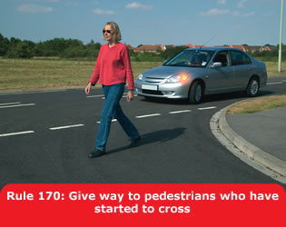
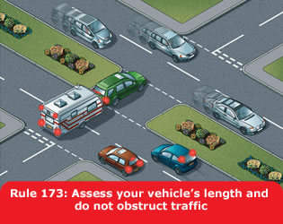
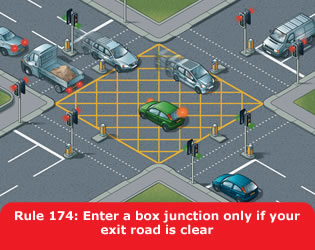
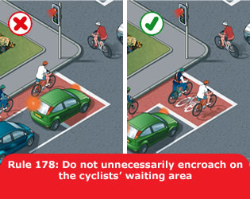
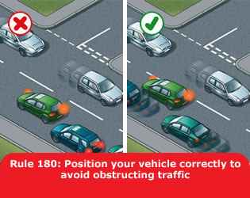

Take extra care at junctions. You should

You MUST stop behind the line at a junction with a
‘Stop’ sign and a solid white line across the road. Wait
for a safe gap in the traffic before you move off.
Laws RTA 1988 sect 36 & TSRGD regs 10 & 16
The approach to a junction may have a ‘Give Way’ sign or
a triangle marked on the road. You MUST give way to
traffic on the main road when emerging from a junction with broken
white lines across the road.
Laws RTA 1988 sect 36 & TSRGD regs 10(1),16(1) &
25
Dual carriageways. When crossing or turning right, first assess whether the central reservation is deep enough to protect the full length of your vehicle.

Box junctions. These have criss-cross yellow lines
painted on the road (see ‘Road markings’). You
MUST NOT enter the box until your exit road or lane
is clear. However, you may enter the box and wait when you want to
turn right, and are only stopped from doing so by oncoming traffic,
or by other vehicles waiting to turn right. At signalled roundabouts
you MUST NOT enter the box unless you can cross over
it completely without stopping.
Law TSRGD regs 10(1) & 29(2)

You MUST stop behind the white ‘Stop’
line across your side of the road unless the light is green. If the
amber light appears you may go on only if you have already crossed
the stop line or are so close to it that to stop might cause a
collision.
Laws RTA 1988 sect 36 & TSRGD regs 10 & 36
You MUST NOT move forward over the white line when
the red light is showing. Only go forward when the traffic lights are
green if there is room for you to clear the junction safely or you
are taking up a position to turn right. If the traffic lights are not
working, treat the situation as you would an unmarked junction and
proceed with great care.
Laws RTA 1988 sect 36 & TSRGD regs 10 & 36
Green filter arrow. This indicates a filter lane only. Do not enter that lane unless you want to go in the direction of the arrow. You may proceed in the direction of the green arrow when it, or the full green light shows. Give other traffic, especially cyclists, time and room to move into the correct lane.

Advanced stop lines. Some signal-controlled
junctions have advanced stop lines to allow cycles to be positioned
ahead of other traffic. Motorists, including motorcyclists,
MUST stop at the first white line reached if the
lights are amber or red and should avoid blocking the way or
encroaching on the marked area at other times, e.g. if the junction
ahead is blocked. If your vehicle has proceeded over the first white
line at the time that the signal goes red, you MUST
stop at the second white line, even if your vehicle is in the marked
area. Allow cyclists time and space to move off when the green signal
shows.
Laws RTA 1988 sect 36 & TSRGD regs 10, 36(1) &
43(2)
Well before you turn right you should
Wait until there is a safe gap between you and any oncoming vehicle. Watch out for cyclists, motorcyclists, pedestrians and other road users. Check your mirrors and blind spot again to make sure you are not being overtaken, then make the turn. Do not cut the corner. Take great care when turning into a main road; you will need to watch for traffic in both directions and wait for a safe gap.
Remember: Mirrors – Signal – Manoeuvre

When turning right at crossroads where an oncoming vehicle is also turning right, there is a choice of two methods
Use your mirrors and give a left-turn signal well before you turn left. Do not overtake just before you turn left and watch out for traffic coming up on your left before you make the turn, especially if driving a large vehicle. Cyclists, motorcyclists and other road users in particular may be hidden from your view.

When turning